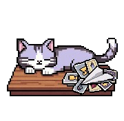

〜 ゆるくて少しだけ毒のある前世鑑定（完全無料） 〜

質問内容が表示される場所です。
Underworld database accessing...
あなたの魂のスキャン情報をロードしています...
Underworld data stream active
※上の「✕」ボタンを押すと結果画面に進めます。
無課金主義なのに推しに全財産を貢いだ吟遊詩人
前世のあなたは、自由奔放で直感的、その日のインスピレーションだけで生きていた「ドパミン信者」でした。
ライブ中に「限界突破コール」を叫びすぎて肺が破裂し昇天。
現世でもガチャの排出率（確率操作）に脳をハッキングされ記憶を失う呪い。